Section 3.6 Point-Slope Form
In Section 5, we learned that a linear equation can be written in slope-intercept form, \(y=mx+b\text{.}\) This section covers an alternative that is often more useful depending on the application: point-slope form.
Subsection 3.6.1 Point-Slope Motivation and Definition
Starting in 1990, the population of the United States has been growing by about \(2.865\) million people per year. Also, back in 1990, the population was \(253\) million. Since the rate of growth has been roughly constant, a linear model is appropriate. Let’s try to write an equation to model this.
We consider using slope-intercept form, but we would need to know the \(y\)-intercept, and nothing in the background tells us that. We’d need to know the population of the United States in the year 0, before there even was a United States.
We could do some side work to calculate the \(y\)-intercept, but let’s try something else. Here are some things we know:
- The slope equation is \(m=\frac{y_2-y_1}{x_2-x_1}\text{.}\)
- The slope is \(m=2.865\,\frac{\text{million people}}{\text{year}}\text{,}\) or \(m=\frac{2.865\,\text{million people}}{1\,\text{year}}\text{.}\)
- One point on the line is \((1990,253)\text{,}\) because in 1990, the population was 253 million.
If we use the generic \((x,y)\) to represent a point somewhere on this line, then the rate of change between \((1990,253)\) and \((x,y)\) has to be \(2.865\text{.}\) So
\begin{equation*}
\frac{y-253}{x-1990}=2.865\text{.}
\end{equation*}
There is good reason to want to isolate \(y\) in this equation:
1
It will help us to see that \(y\) (population) depends on \(x\) (whatever year it is).
\begin{align*}
\frac{y-253}{x-1990}\amp=2.865\\
\frac{y-253}{x-1990}\multiplyright{(x-1990)}\amp=2.865\multiplyright{(x-1990)}\\
y-253\amp=2.865(x-1990)\amp\amp\text{(could distribute, but not going to)}\\
y\amp=2.865(x-1990)\addright{253}
\end{align*}
This is a good place to stop. We have isolated \(y\text{,}\) and three meaningful numbers appear in the equation: the rate of growth, a certain year, and the population in that year. This is a specific example of point-slope form. Before we look deeper at point-slope form, let’s continue reducing the line equation into slope-intercept form by distributing and combining like terms.
\begin{align*}
y\amp=2.865(x-1990)+253\\
y\amp=2.865x - 5701.35 + 253\amp\amp\text{(distributed the }2.865\text{)}\\
y\amp=2.865x - 5448.35\amp\amp\text{combined like terms}
\end{align*}
One concern with slope-intercept form is that it uses the \(y\)-intercept, which might be somewhat meaningless in the context of an application. For example, here we have found that the \(y\)-intercept is at \((0,-5448.35)\text{,}\) but what practical use is that? It’s nonsense to say that in the year 0, the population of the United States was \(-5448.35\) million. It doesn’t make sense to have a negative population. It doesn’t make sense to talk about the United States population before there even was a United States. And it doesn’t make sense to use this model for years earlier than 1990 because the background information says clearly that the rate of change we have applies to years 1990 and later.
For all these reasons, we prefer the equation when it was in the form
\begin{equation*}
y=2.865(x-1990)+253
\end{equation*}
Definition 3.6.2. Point-Slope Form.
When \(x\) and \(y\) have a linear relationship where \(m\) is the slope and \((x_0,y_0)\) is some specific point that the line passes through, one equation for this relationship is
\begin{equation}
y=m\left(x-x_0\right)+y_0\tag{3.6.1}
\end{equation}
and this equation is called the point-slope form of the line. It is called this because the slope and one point on the line are immediately discernible from the numbers in the equation.

There is a subtraction sign and an addition sign in point-slope form, and you may have trouble remembering which is which. But remember that that the line is supposed to pass through \((x_0,y_0)\text{.}\) So substituting \(x_0\) in for \(x\) should leave \(y\) equal to \(y_0\text{.}\) And it does. For example, consider our example equation \(y=2.865(x-1990)+253\text{.}\) Here, \(x_0\) is \(1990\) and \(y_0\) is \(253\text{.}\) And:
\begin{align*}
y\amp=2.865(x-1990)+253\amp\amp\text{substitute }1990\text{ for }x\ldots\\
y\amp=2.865(\substitute{1990}-1990)+253\\
y\amp=2.865(0)+253\\
y\amp=253\amp\amp\ldots\text{and }y\text{ works out to be }253
\end{align*}
The subtraction is exactly where it needs to be to wipe out \(m(x-x_0)\) and leave you with \(y_0\text{.}\) More generally:
\begin{equation*}
\underset{\overset{\downarrow}{y_0}}{\strut y \strut}=m(\overset{\overset{x_0}{\downarrow}}{\strut x \strut}-x_0)+y_0
\end{equation*}
Remark 3.6.4. Alternative Point-Slope Form.
It is also common to define point-slope form as
\begin{equation}
y-y_0=m\left(x-x_0\right)\tag{3.6.2}
\end{equation}
by subtracting \(y_0\) from each side. If you learn about point-slope form from some other resource, you may come across this. We feel that the \(y=m\left(x-x_0\right)+y_0\) form will be more helpful with college algebra, statistics, and calculus.
Checkpoint 3.6.5.
Consider the line in this graph:
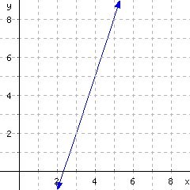
- Identify a point visible on this line that has integer coordinates, and write it as an ordered pair.
- What is the slope of the line?
- Use point-slope form to write an equation for this line, making use of a point with integer coordinates.
Explanation.
- The visible points with integer coordinates are \((2,-1)\text{,}\) \((3,2)\text{,}\) \((4,5)\text{,}\) and \((5,8)\text{.}\)
- Several slope triangles are visible where the “run” is \(1\) and the “rise” is \(3\text{.}\) So the slope is \(\frac{3}{1}=3\text{.}\)
- Using \((3,2)\text{,}\) the point-slope equation is \(y=3(x-3)+2\text{.}\) (You could use other points, like \((2,-1)\text{,}\) and get a different-looking equation like \(y=3(x-2)+(-1)\) which simplifies to \(y=3(x-2)-1\text{.}\))
In Checkpoint 5, the solution explains that each of the following are acceptable equations for the same line:
\begin{align*}
y\amp=3(x-3)+2\amp y\amp=3(x-2)-1
\end{align*}
The first uses \((3,2)\) as a point on the line, and the second uses \((2,-1)\text{.}\) Are those two equations really equivalent? Let’s distribute and simplify each of them to get slope-intercept form.
\begin{align*}
y\amp=3(x-3)+2\amp y\amp=3(x-2)-1\\
y\amp=3x-9+2\amp y\amp=3x-6-1\\
y\amp=3x-7\amp y\amp=3x-7
\end{align*}
So, yes. It didn’t matter which point we used to write a point-slope equation. We get different-looking equations that still represent the same line.
Point-slope form is preferable when we know a line’s slope and a point on it, but we don’t know the \(y\)-intercept. We recognie that distributing the slope and combining like terms can always be used to find the line’s slope-intercept form.
Example 3.6.6.
A spa chain has been losing customers at a roughly constant rate since the year 2010. In 2013, it had \(2975\) customers; in 2016, it had \(2585\) customers. Management estimated that the company will go out of business once its customer base decreases to \(1800\text{.}\) If this trend continues, when will the company close?
The given information tells us two points on the line: \((2013,2975)\) and \((2016,2585)\text{.}\) The slope formula will give us the slope. After labeling those two points as \((\overset{x_1}{2013},\overset{y_1}{2975})\) and \((\overset{x_2}{2016},\overset{y_2}{2585})\text{,}\) we have:
\begin{align*}
\text{slope}\amp=\frac{y_2-y_1}{x_2-x_1}\\
\amp=\frac{2585-2975}{2016-2013}\\
\amp=\frac{-390}{3}\\
\amp=-130
\end{align*}
And considering units, this means they are losing \(130\) customers per year.
Let’s note that we could try to make an equation for this line in slope-intercept form, but then we would need to calculate the \(y\)-intercept, which in context would correspond to the number of customers in year \(0\text{.}\) We could do it, but we’d be working with numbers that have no real-world meaning in this context.
For point-slope form, since we calculated the slope, we know at least this much:
\begin{equation*}
y=-130(x-x_0)+y_0\text{.}
\end{equation*}
Now we can pick one of those two given points, say \((2013,2975)\text{,}\) and get the equation
\begin{equation*}
y=-130(x-2013)+2975\text{.}
\end{equation*}
Note that all three numbers in this equation have meaning in the context of the spa chain. The \(-130\) tells us how many customers are leaving per year, the \(2013\) represents a year, and the \(2975\) tells us the number of customers in that year.
We’re ready to answer the question about when the chain might go out of business. We need to substitute the given value of \(1800\) into the appropriate place in our equation. In order to substitute correctly, we must clearly understand what the variable \(y\) represents including its units, and what the variable \(x\) represents including its units. Write down those definitions first in any question you attempt to answer. It will save you time in the long run, and avoid frustration. Knowing the variable \(y\) represents the number of customers in a given year allows one to understand that \(y\) must be replaced with \(1800\) customers. Knowing the variable \(x\) represents a year allows one to understand that \(x\) will not be substituted, because we are trying to solve for what year something happens.
After substituting \(y\) in the equation with \(1800\text{,}\) we will solve for \(x\text{,}\) and find the answer we seek.
\begin{align*}
y\amp=-130(x-2013)+2975\\
\substitute{1800}\amp=-130(x-2013)+2975\\
1800\subtractright{2975}\amp=-130(x-2013)\\
-1175\amp=-130(x-2013)\\
\divideunder{-1175}{-130}\amp=\divideunder{-130(x-2013)}{-130}\\
9.038\amp\approx x-2013\\
9.038\addright{2013}\amp\approx x\\
2022\amp\approx x
\end{align*}
We find that at this rate the company is headed toward a collapse in 2022.
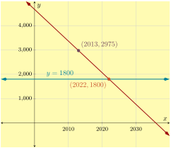
Figure 7 illustrates one line representing the spa’s customer base, and another line representing the customer level that would cause the business to close. To make a graph of \(y=-130(x-2013)+2975\text{,}\) we first marked the point \((2013,2975)\) and from there used the slope of \(-130\text{.}\)
Checkpoint 3.6.8.
If we go state by state and compare the Republican presidential candidate’s 2012 vote share (\(x\)) to the Republican presidential candidate’s 2016 vote share (\(y\)), we get the following graph (called a “scatterplot”, used in statistics) where a trendline has been superimposed.
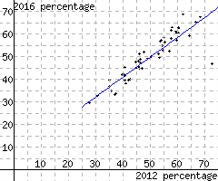
Find a point-slope equation for this line. (Note that a slope-intercept equation would use the \(y\)-intercept coordinate \(b\text{,}\) and that would not be meaningful in context, since no state had anywhere near zero percent Republican vote.)
Explanation.
We need to calculate slope first. And for that, we need to identify two points on the line. conveniently, the line appears to pass right through \((50,50)\text{.}\) We have to take a second point somewhere, and \((75,72)\) seems like a reasonable roughly accurate choice. The slope equation gives us that
\begin{equation*}
m=\frac{72-50}{75-50}=\frac{22}{25}=0.88
\text{.}
\end{equation*}
Using \((50,50)\) as the point, the point-slope equation would then be
\begin{equation*}
y=0.88(x-50)+50
\text{.}
\end{equation*}
Subsection 3.6.2 Using Two Points to Build a Linear Equation
Since two points can determine a line’s location, we can calculate a line’s equation using just the coordinates from any two points it passes through.
Example 3.6.9.
A line passes through \((-6,0)\) and \((9,-10)\text{.}\) Find this line’s equation in both point-slope and slope-intercept form.
Explanation.
We will use the slope formula to find the slope first. After labeling those two points as \((\overset{x_1}{-6},\overset{y_1}{0}) \text{ and } (\overset{x_2}{9},\overset{y_2}{-10})\text{,}\) we have:
\begin{align*}
\text{slope}\amp=\frac{y_2-y_1}{x_2-x_1}\\
\amp=\frac{\phantom{y_2}-\phantom{y_1}}{\phantom{x_2}-\phantom{x_1}}\amp\amp\text{(reserving place holders)}\\
\amp=\frac{\phantom{y_2}-0}{\phantom{x_2}-(-6)}\amp\amp\text{(fill in first point, vertically)}\\
\amp=\frac{-10-0}{9-(-6)}\amp\amp\text{(fill in second point, vertically)}\\
\amp=\frac{-10}{15}\\
\amp=-\frac{2}{3}
\end{align*}
The point-slope equation is \(y=-\frac{2}{3}(x-x_0)+y_0\text{.}\) Next, we will use \((9,-10)\) and substitute \(x_0\) with \(9\) and \(y_0\) with \(-10\text{,}\) and we have:
\begin{align*}
y\amp=-\frac{2}{3}(x-x_0)+y_0\\
y\amp=-\frac{2}{3}(x-9)+(-10)\\
y\amp=-\frac{2}{3}(x-9)-10
\end{align*}
Next, we will change the point-slope equation into slope-intercept form:
\begin{align*}
y\amp=-\frac{2}{3}(x-9)-10\\
y\amp=-\frac{2}{3}x+6-10\\
y\amp=-\frac{2}{3}x-4
\end{align*}
Checkpoint 3.6.10.
A line passes through \((37,40)\) and \((-11,-60)\text{.}\) Find equations for this line using both point-slope and slope-intercept form.
An equation for this line in point-slope form is .
An equation for this line in slope-intercept form is
Explanation.
First, use the slope formula to find the slope of this line:
\begin{equation*}
\begin{aligned}
m=\frac{y_2-y_1}{x_2-x_1}\amp=\frac{-60-40}{-11-37}\\
\amp=\frac{-100}{-48}\\
\amp=\frac{25}{12}\text{.}
\end{aligned}
\end{equation*}
The generic point-slope equation is \(y=m(x-x_0)+y_0\text{.}\) We have found the slope, \(m\text{,}\) and we may use \((37,40)\) for \((x_0,y_0)\text{.}\) So an equation in point-slope form is \({y = \frac{25}{12}\mathopen{}\left(x-37\right)+40}\text{.}\)
To find a slope-intercept form equation, we can take the generic \(y=mx+b\) and substitute in the value of \(m\) we found. Also, we know that \((x,y)=(-11,-60)\) should make the equation true. So we have
\begin{equation*}
\begin{aligned}
y\amp=mx+b\\
-60\amp=\frac{25}{12}(-11)+b\amp\amp\text{(now we may solve for }b\text{)}\\
-60\multiplyright{12}\amp=\left(\frac{25}{12}(-11)+b\right)\multiplyright{12}\amp\amp\text{(clear the denominator)}\\
-720\amp=25(-11)+12b\amp\amp\text{(distribute and multiply)}\\
-720\amp=-275+12b\\
-720\addright{275}\amp=264+12b\addright{275}\\
-445\amp=12b\\
\divideunder{-445}{12}\amp=\divideunder{12b}{12}\\
b\amp=-\frac{445}{12}\text{.}
\end{aligned}
\end{equation*}
So the slope-intercept equation is \({y = \frac{25}{12}x-\frac{445}{12}}\text{.}\) Note that the slope-intercept equation has an unfriendly fraction, and the fact that this can happen is another reason to use the point-slope form whenever it is reasonable to do so.
Subsection 3.6.3 More on Point-Slope Form
We can tell a lot about a linear equation now that we have learned both slope-intercept form and point-slope form. For example, we can know that \(y=4x+2\) is in slope-intercept form because it looks like \(y=mx+b\text{.}\) It will graph as a line with slope \(4\) and vertical intercept \((0,2)\text{.}\) Likewise, we know that the equation \(y=-5(x-3)+2\) is in point-slope form because it looks like \(y=m(x-x_0)+y_0\text{.}\) It will graph as a line that has slope \(-5\) and will pass through the point \((3,2)\text{.}\)
Example 3.6.11.
For the equations below, state whether they are in slope-intercept form or point-slope form. Then identify the slope of the line and at least one point that the line will pass through.
- \(\displaystyle y=-3x+2\)
- \(\displaystyle y=9(x+1)-6\)
- \(\displaystyle y=5-x\)
- \(\displaystyle y=-\frac{12}{5}(x-9)+1\)
Explanation.
- The equation \(y=-3x+2\) is in slope-intercept form. The slope is \(-3\) and the vertical intercept is \((0,2)\text{.}\)
- The equation \(y=9(x+1)-6\) is in point-slope form. The slope is \(9\) and the line passes through the point \((-1,-6)\text{.}\)
- The equation \(y=5-x\) is almost in slope-intercept form. If we rearrange the right hand side to be \(y=-x+5\text{,}\) we can see that the slope is \(-1\) and the vertical intercept is \((0,5)\text{.}\)
- The equation \(y=-\frac{12}{5}(x-9)+1\) is in point-slope form. The slope is \(-\frac{12}{5}\) and the line passes through the point \((9,1)\text{.}\)
Example 3.6.12.
Consider the graph in Figure 13.
- Using the point-slope form of a line, find three different linear equations for the line shown in the graph. Three integer-valued points are shown for convenience.
- Determine the slope-intercept form of the equation of this line.
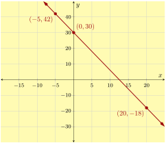
Explanation.
-
To write any of the equations representing this line in point-slope form, we must first find the slope of the line and we can use the slope formula to do so. We will arbitrarily choose \((0,30)\) and \((-5,42)\) as the two points. Inputting these points into the slope formula yields:\begin{align*} m\amp=\frac{y_2-y_1}{x_2-x_1}\\ \amp=\frac{\substitute{42}-\substitute{30}}{\substitute{-5}-\substitute{0}}\\ \amp=\frac{12}{-5}\\ \amp=-\frac{12}{5} \end{align*}Thus the slope of the line is \(-\frac{12}{5}\text{.}\)Next, we need to write an equation in point-slope form based on each point shown. Using the point \((0,30)\text{,}\) we have:\begin{equation*} y=-\frac{12}{5}(x-0)+30 \end{equation*}(This simplifies to \(y=-\frac{12}{5}x+30\text{.}\))The next point is \((20,-18)\text{.}\) Using this point, we can write an equation for this line as:\begin{equation*} y=-\frac{12}{5}(x-20)-18 \end{equation*}Finally, we can also use the point \((-5,42)\) to write an equation for this line:\begin{equation*} y=-\frac{12}{5}(x-(-5))+42 \end{equation*}which can also be written as:\begin{equation*} y=-\frac{12}{5}(x+5)+42 \end{equation*}
- As \((0,30)\) is the vertical intercept, we can write the equation of this line in slope-intercept form as \(y=-\frac{12}{5}x+30\text{.}\) It’s important to note that each of the equations that were written in point-slope form simplify to this, making all four equations equivalent.
Reading Questions 3.6.4 Reading Questions
1.
Explain why there are some situations where point-slope form is preferable to slope-intercept form.
2.
There are basically two steps to convert a point-slope form line equation into a slope-intercept form line equation. What are they?
3.
If a line has equation \(y=2(x+5)+6\text{,}\) we can see that the line passes through a certain point. To find the \(x\)-coordinate of that point, you might look at the \(5\) and have memorized that you should negate that. Instead, you could train yourself to look at the \(x\) and realize the important number is \(-5\) because that is what it takes to .
Exercises 3.6.5 Exercises
Review and Warmup
Exercise Group.
1.
Evaluate \({3C+10B}\) for \(C = 6\) and \(B = -7\text{.}\)
Answer.
\(-52\)
Explanation.
We evaluate \({3C+10B}\) by replacing \(C\) with \(6\) and \(B\) with \(-7\) in the formula.
\(\begin{aligned}
{3C+10B} \amp = 3(6) + 10(-7) \\
\amp = 18 - 70 \\
\amp = {-52}
\end{aligned}\)
2.
Evaluate \({-2C-9c}\) for \(C = -6\) and \(c = 8\text{.}\)
Answer.
\(-60\)
Explanation.
We evaluate \({-2C-9c}\) by replacing \(C\) with \(-6\) and \(c\) with \(8\) in the formula.
\(\begin{aligned}
{-2C-9c} \amp = -2(-6) - 9(8) \\
\amp = 12 - 72 \\
\amp = {-60}
\end{aligned}\)
3.
Evaluate
\begin{equation*}
\displaystyle\frac{y_2 - y_1}{x_2 - x_1}
\end{equation*}
for \(x_1 = -17\text{,}\) \(x_2 = 5\text{,}\) \(y_1 = 5\text{,}\) and \(y_2 = -16\text{:}\)
Answer:
Answer.
\(-{\frac{21}{22}}\)
4.
Evaluate
\begin{equation*}
\displaystyle\frac{y_2 - y_1}{x_2 - x_1}
\end{equation*}
for \(x_1 = -12\text{,}\) \(x_2 = 10\text{,}\) \(y_1 = -19\text{,}\) and \(y_2 = -7\text{:}\)
Answer:
Answer.
\({\frac{6}{11}}\)
Skills Practice
Point-Slope Form.
5.
A line’s equation is given in point-slope form:
\({y}={5\mathopen{}\left(x-5\right)+28}\)
This line’s slope is .
A point on this line that is apparent from the given equation is .
Answer 1.
\(5\)
Answer 2.
\(\left(5,28\right)\)
Explanation.
Compare the given equation with a generic point-slope equation:
\(\begin{aligned}
y \amp = m(x-x_{1})+y_{1} \\
{y} \amp = {5\mathopen{}\left(x-5\right)+28}
\end{aligned}\)
We can see the slope is \(5\text{,}\) and an apparent point on the line \((x_{1},y_{1})\) is \({\left(5,28\right)}\text{.}\)
6.
A line’s equation is given in point-slope form:
\({y}={2\mathopen{}\left(x-1\right)+5}\)
This line’s slope is .
A point on this line that is apparent from the given equation is .
Answer 1.
\(2\)
Answer 2.
\(\left(1,5\right)\)
Explanation.
Compare the given equation with a generic point-slope equation:
\(\begin{aligned}
y \amp = m(x-x_{1})+y_{1} \\
{y} \amp = {2\mathopen{}\left(x-1\right)+5}
\end{aligned}\)
We can see the slope is \(2\text{,}\) and an apparent point on the line \((x_{1},y_{1})\) is \({\left(1,5\right)}\text{.}\)
7.
A line’s equation is given in point-slope form:
\({y}={-2\mathopen{}\left(x+2\right)+5}\)
This line’s slope is .
A point on this line that is apparent from the given equation is .
Answer 1.
\(-2\)
Answer 2.
\(\left(-2,5\right)\)
Explanation.
Compare the given equation with a generic point-slope equation:
\(\begin{aligned}
y \amp = m(x-x_{1})+y_1 \\
{y} \amp = {-2\mathopen{}\left(x+2\right)+5}
\end{aligned}\)
We can see the slope is \(-2\text{,}\) and an apparent point on the line \((x_{1},y_{1})\) is \({\left(-2,5\right)}\text{.}\)
8.
A line’s equation is given in point-slope form:
\({y}={-3\mathopen{}\left(x+4\right)+7}\)
This line’s slope is .
A point on this line that is apparent from the given equation is .
Answer 1.
\(-3\)
Answer 2.
\(\left(-4,7\right)\)
Explanation.
Compare the given equation with a generic point-slope equation:
\(\begin{aligned}
y \amp = m(x-x_{1})+y_1 \\
{y} \amp = {-3\mathopen{}\left(x+4\right)+7}
\end{aligned}\)
We can see the slope is \(-3\text{,}\) and an apparent point on the line \((x_{1},y_{1})\) is \({\left(-4,7\right)}\text{.}\)
9.
A line’s equation is given in point-slope form:
\(\displaystyle{ {y}={\left(-\frac{7}{2}\right)\mathopen{}\left(x+6\right)+26} }\)
This line’s slope is .
A point on this line that is apparent from the given equation is .
Answer 1.
\(-{\frac{7}{2}}\)
Answer 2.
\(\left(-6,26\right)\)
Explanation.
Compare the given equation with a generic point-slope equation:
\(\displaystyle{\begin{aligned}
y \amp = m(x-x_{1})+y_1 \\
{y} \amp = {\left(-\frac{7}{2}\right)\mathopen{}\left(x+6\right)+26})
\end{aligned}
}\)
We can see the slope is \(\displaystyle{{-{\frac{7}{2}}}}\text{,}\) and an apparent point on the line \((x_{1},y_{1})\) is \({\left(-6,26\right)}\text{.}\)
10.
A line’s equation is given in point-slope form:
\(\displaystyle{ {y}={\frac{8}{7}\mathopen{}\left(x+21\right) - 22} }\)
This line’s slope is .
A point on this line that is apparent from the given equation is .
Answer 1.
\({\frac{8}{7}}\)
Answer 2.
\(\left(-21,-22\right)\)
Explanation.
Compare the given equation with a generic point-slope equation:
\(\displaystyle{\begin{aligned}
y \amp = m(x-x_{1})+y_1 \\
{y} \amp = {\frac{8}{7}\mathopen{}\left(x+21\right) - 22})
\end{aligned}
}\)
We can see the slope is \(\displaystyle{{{\frac{8}{7}}}}\text{,}\) and an apparent point on the line \((x_{1},y_{1})\) is \({\left(-21,-22\right)}\text{.}\)
11.
A line’s equation is given in point-slope form:
\(\displaystyle{ {y}={\frac{9}{4}\mathopen{}\left(x-4\right)+8} }\)
This line’s slope is .
A point on this line that is apparent from the given equation is .
Answer 1.
\({\frac{9}{4}}\)
Answer 2.
\(\left(4,8\right)\)
Explanation.
Compare the given equation with a generic point-slope equation:
\(\displaystyle{\begin{aligned}
y \amp = m(x-x_{1})+y_1 \\
{y} \amp = {\frac{9}{4}\mathopen{}\left(x-4\right)+8})
\end{aligned}
}\)
We can see the slope is \(\displaystyle{{{\frac{9}{4}}}}\text{,}\) and an apparent point on the line \((x_{1},y_{1})\) is \({\left(4,8\right)}\text{.}\)
12.
A line’s equation is given in point-slope form:
\(\displaystyle{ {y}={\left(-\frac{1}{9}\right)\mathopen{}\left(x-27\right) - 7} }\)
This line’s slope is .
A point on this line that is apparent from the given equation is .
Answer 1.
\(-{\frac{1}{9}}\)
Answer 2.
\(\left(27,-7\right)\)
Explanation.
Compare the given equation with a generic point-slope equation:
\(\displaystyle{\begin{aligned}
y \amp = m(x-x_{1})+y_1 \\
{y} \amp = {\left(-\frac{1}{9}\right)\mathopen{}\left(x-27\right) - 7})
\end{aligned}
}\)
We can see the slope is \(\displaystyle{{-{\frac{1}{9}}}}\text{,}\) and an apparent point on the line \((x_{1},y_{1})\) is \({\left(27,-7\right)}\text{.}\)
13.
A line passes through the points \((4,15)\) and \((5,17)\text{.}\) Find this line’s equation in point-slope form.
Using the point \((4,15)\text{,}\) this line’s point-slope form equation is .
Using the point \((5,17)\text{,}\) this line’s point-slope form equation is .
Answer 1.
\(y = 2\mathopen{}\left(x-4\right)+15\)
Answer 2.
\(y = 2\mathopen{}\left(x-5\right)+17\)
Explanation.
A line’s equation in point-slope form looks like \(y=m(x-x_{0})+y_0\) where \(m\) is the slope of the line and \((x_{0},y_{0})\) is a point that the line passes through. We first need to find the line’s slope.
To find a line’s slope, we can use the slope formula:
\(\displaystyle{ \text{slope}=\frac{y_{2}-y_{1}}{x_{2}-x_{1}} }\)
We mark which number corresponds to which variable in the formula:
\(\displaystyle{ (4,15) \longrightarrow (x_{1},y_{1}) }\)
\(\displaystyle{ (5,17) \longrightarrow (x_{2},y_{2}) }\)
Now we substitute these values into the corresponding variables in the slope formula:
\(\displaystyle{ \begin{aligned}\text{slope}\amp =\frac{y_{2}-y_{1}}{x_{2}-x_{1}}\\\amp =\frac{17-15}{5-4}\\\amp =\frac{2}{1}\\\amp =2\end{aligned} }\)
Now we have \(y=2(x-x_{0})+y_0\text{.}\) The next step is to use a point that we know the line passes through.
If we choose to use the point \((4,15)\text{,}\) we have:
\(\begin{aligned}
y \amp = m(x-x_{0})+y_0 \\
y \amp = 2(x-4)+15
\end{aligned}\)
If we choose to use the point \((5,17)\text{,}\) we have:
\(\begin{aligned}
y \amp = m(x-x_{0})+y_0 \\
y \amp = 2(x-5)+17
\end{aligned}\)
Note that these two equations are equivalent. You will see why once you change both equations to slope-intercept form. This is left as an exercise.
14.
A line passes through the points \((2,9)\) and \((3,12)\text{.}\) Find this line’s equation in point-slope form.
Using the point \((2,9)\text{,}\) this line’s point-slope form equation is .
Using the point \((3,12)\text{,}\) this line’s point-slope form equation is .
Answer 1.
\(y = 3\mathopen{}\left(x-2\right)+9\)
Answer 2.
\(y = 3\mathopen{}\left(x-3\right)+12\)
Explanation.
A line’s equation in point-slope form looks like \(y=m(x-x_{0})+y_0\) where \(m\) is the slope of the line and \((x_{0},y_{0})\) is a point that the line passes through. We first need to find the line’s slope.
To find a line’s slope, we can use the slope formula:
\(\displaystyle{ \text{slope}=\frac{y_{2}-y_{1}}{x_{2}-x_{1}} }\)
We mark which number corresponds to which variable in the formula:
\(\displaystyle{ (2,9) \longrightarrow (x_{1},y_{1}) }\)
\(\displaystyle{ (3,12) \longrightarrow (x_{2},y_{2}) }\)
Now we substitute these values into the corresponding variables in the slope formula:
\(\displaystyle{ \begin{aligned}\text{slope}\amp =\frac{y_{2}-y_{1}}{x_{2}-x_{1}}\\\amp =\frac{12-9}{3-2}\\\amp =\frac{3}{1}\\\amp =3\end{aligned} }\)
Now we have \(y=3(x-x_{0})+y_0\text{.}\) The next step is to use a point that we know the line passes through.
If we choose to use the point \((2,9)\text{,}\) we have:
\(\begin{aligned}
y \amp = m(x-x_{0})+y_0 \\
y \amp = 3(x-2)+9
\end{aligned}\)
If we choose to use the point \((3,12)\text{,}\) we have:
\(\begin{aligned}
y \amp = m(x-x_{0})+y_0 \\
y \amp = 3(x-3)+12
\end{aligned}\)
Note that these two equations are equivalent. You will see why once you change both equations to slope-intercept form. This is left as an exercise.
15.
A line passes through the points \((1,7)\) and \((-2,16)\text{.}\) Find this line’s equation in point-slope form.
Using the point \((1,7)\text{,}\) this line’s point-slope form equation is .
Using the point \((-2,16)\text{,}\) this line’s point-slope form equation is .
Answer 1.
\(y = -3\mathopen{}\left(x-1\right)+7\)
Answer 2.
\(y = -3\mathopen{}\left(x--2\right)+16\)
Explanation.
A line’s equation in point-slope form looks like \(y=m(x-x_{0})+y_{0}\) where \(m\) is the slope of the line and \((x_{0},y_{0})\) is a point that the line passes through. We first need to find the line’s slope.
To find a line’s slope, we can use the slope formula:
\(\displaystyle{ \text{slope}=\frac{y_{2}-y_{1}}{x_{2}-x_{1}} }\)
We mark which number corresponds to which variable in the formula:
\(\displaystyle{ (1,7) \longrightarrow (x_{1},y_{1}) }\)
\(\displaystyle{ (-2,16) \longrightarrow (x_{2},y_{2}) }\)
Now we substitute these values into the corresponding variables in the slope formula:
\(\displaystyle{ \begin{aligned}\text{slope}\amp =\frac{y_{2}-y_{1}}{x_{2}-x_{1}}\\\amp =\frac{16-7}{-2-1}\\\amp =\frac{9}{-3}\\\amp =-3\end{aligned} }\)
Now we have \(y=-3(x-x_{0})+y_{0}\text{.}\) The next step is to use a point that we know the line passes through.
If we choose to use the point \((1,7)\text{,}\) we have:
\(\begin{aligned}
y\amp = m(x-x_{0})+y_0 \\
y \amp = -3(x-1)+7
\end{aligned}\)
If we choose to use the point \((-2,16)\text{,}\) we have:
\(\begin{aligned}
y\amp = m(x-x_{0})+y_0 \\
y \amp = -3(x + 2)+16
\end{aligned}\)
Note that these two equations are equivalent. You will see why once you change both equations to slope-intercept form. This is left as an exercise.
16.
A line passes through the points \((-5,26)\) and \((5,-14)\text{.}\) Find this line’s equation in point-slope form.
Using the point \((-5,26)\text{,}\) this line’s point-slope form equation is .
Using the point \((5,-14)\text{,}\) this line’s point-slope form equation is .
Answer 1.
\(y = -4\mathopen{}\left(x--5\right)+26\)
Answer 2.
\(y = -4\mathopen{}\left(x-5\right)+-14\)
Explanation.
A line’s equation in point-slope form looks like \(y=m(x-x_{0})+y_{0}\) where \(m\) is the slope of the line and \((x_{0},y_{0})\) is a point that the line passes through. We first need to find the line’s slope.
To find a line’s slope, we can use the slope formula:
\(\displaystyle{ \text{slope}=\frac{y_{2}-y_{1}}{x_{2}-x_{1}} }\)
We mark which number corresponds to which variable in the formula:
\(\displaystyle{ (-5,26) \longrightarrow (x_{1},y_{1}) }\)
\(\displaystyle{ (5,-14) \longrightarrow (x_{2},y_{2}) }\)
Now we substitute these values into the corresponding variables in the slope formula:
\(\displaystyle{ \begin{aligned}\text{slope}\amp =\frac{y_{2}-y_{1}}{x_{2}-x_{1}}\\\amp =\frac{-14-26}{5-(-5)}\\\amp =\frac{-40}{10}\\\amp =-4\end{aligned} }\)
Now we have \(y=-4(x-x_{0})+y_{0}\text{.}\) The next step is to use a point that we know the line passes through.
If we choose to use the point \((-5,26)\text{,}\) we have:
\(\begin{aligned}
y\amp = m(x-x_{0})+y_0 \\
y \amp = -4(x + 5)+26
\end{aligned}\)
If we choose to use the point \((5,-14)\text{,}\) we have:
\(\begin{aligned}
y\amp = m(x-x_{0})+y_0 \\
y \amp = -4(x-5) - 14
\end{aligned}\)
Note that these two equations are equivalent. You will see why once you change both equations to slope-intercept form. This is left as an exercise.
17.
A line passes through the points \((15,{23})\) and \((-5,{-1})\text{.}\) Find this line’s equation in point-slope form.
Using the point \((15,{23})\text{,}\) this line’s point-slope form equation is .
Using the point \((-5,{-1})\text{,}\) this line’s point-slope form equation is .
Answer 1.
\(y = \frac{6}{5}\mathopen{}\left(x-15\right)+23\)
Answer 2.
\(y = \frac{6}{5}\mathopen{}\left(x+5\right)+-1\)
Explanation.
A line’s equation in point-slope form looks like \(y=m(x-x_{0})+y_0\) where \(m\) is the slope of the line and \((x_{0},y_{0})\) is a point that the line passes through. We first need to find the line’s slope.
To find a line’s slope, we can use the slope formula:
\(\displaystyle{ \text{slope}=\frac{y_{2}-y_{1}}{x_{2}-x_{1}} }\)
We mark which number corresponds to which variable in the formula:
\(\displaystyle{ (15,{23}) \longrightarrow (x_{1},y_{1}) }\)
\(\displaystyle{ (-5,{-1}) \longrightarrow (x_{2},y_{2}) }\)
Now we substitute these values into the corresponding variables in the slope formula:
\(\displaystyle{ \begin{aligned}\text{slope}\amp =\frac{y_{2}-y_{1}}{x_{2}-x_{1}}\\\amp =\frac{{-1}-{23}}{-5-15}\\\amp =\frac{{-24}}{-20}\\\amp ={{\frac{6}{5}}}\end{aligned} }\)
Now we have \(y={{\frac{6}{5}}}(x-x_{0})+y_0\text{.}\) The next step is to use a point that we know the line passes through.
If we choose to use the point \((15,{23})\text{,}\) we have:
\(\begin{aligned}
y \amp = m(x-x_{0})+y_0 \\
{y} \amp = {{\frac{6}{5}}}(x-15)+{23}
\end{aligned}\)
If we choose to use the point \((-5,{-1})\text{,}\) we have:
\(\begin{aligned}
y \amp = m(x-x_{0})+y_0 \\
{y} \amp = {{\frac{6}{5}}}(x + 5)+{-1}
\end{aligned}\)
Note that these two equations are equivalent. You will see why once you change both equations to slope-intercept form. This is left as an exercise.
18.
A line passes through the points \((0,{8})\) and \((27,{29})\text{.}\) Find this line’s equation in point-slope form.
Using the point \((0,{8})\text{,}\) this line’s point-slope form equation is .
Using the point \((27,{29})\text{,}\) this line’s point-slope form equation is .
Answer 1.
\(y = \frac{7}{9}\mathopen{}\left(x-0\right)+8\)
Answer 2.
\(y = \frac{7}{9}\mathopen{}\left(x-27\right)+29\)
Explanation.
A line’s equation in point-slope form looks like \(y=m(x-x_{0})+y_0\) where \(m\) is the slope of the line and \((x_{0},y_{0})\) is a point that the line passes through. We first need to find the line’s slope.
To find a line’s slope, we can use the slope formula:
\(\displaystyle{ \text{slope}=\frac{y_{2}-y_{1}}{x_{2}-x_{1}} }\)
We mark which number corresponds to which variable in the formula:
\(\displaystyle{ (0,{8}) \longrightarrow (x_{1},y_{1}) }\)
\(\displaystyle{ (27,{29}) \longrightarrow (x_{2},y_{2}) }\)
Now we substitute these values into the corresponding variables in the slope formula:
\(\displaystyle{ \begin{aligned}\text{slope}\amp =\frac{y_{2}-y_{1}}{x_{2}-x_{1}}\\\amp =\frac{{29}-{8}}{27-0}\\\amp =\frac{{21}}{27}\\\amp ={{\frac{7}{9}}}\end{aligned} }\)
Now we have \(y={{\frac{7}{9}}}(x-x_{0})+y_0\text{.}\) The next step is to use a point that we know the line passes through.
If we choose to use the point \((0,{8})\text{,}\) we have:
\(\begin{aligned}
y \amp = m(x-x_{0})+y_0 \\
{y} \amp = {{\frac{7}{9}}}(x-0)+{8}
\end{aligned}\)
If we choose to use the point \((27,{29})\text{,}\) we have:
\(\begin{aligned}
y \amp = m(x-x_{0})+y_0 \\
{y} \amp = {{\frac{7}{9}}}(x-27)+{29}
\end{aligned}\)
Note that these two equations are equivalent. You will see why once you change both equations to slope-intercept form. This is left as an exercise.
19.
A line’s slope is \(5\text{.}\) The line passes through the point \((2,13)\text{.}\) Find an equation for this line in both point-slope and slope-intercept form.
An equation for this line in point-slope form is: .
An equation for this line in slope-intercept form is: .
Answer 1.
\(y = 5\mathopen{}\left(x-2\right)+13\)
Answer 2.
\(y = 5x+3\)
Explanation.
It’s easier to find the point-slope form first, since we have been given a point on the line and the slope of the line. The generic formula for the point-slope form is:
\(y=m(x-x_{0})+y_0\)
where \(m\) is the slope and \((x_{0},y_{0})\) is a point on the line. We have been given that \(m=5\) and that the line passes through the point \((2,13)\text{.}\) We substitute these numbers into the formula, and we have:
\(\begin{aligned}
y \amp = m(x-x_{0})+y_0 \\
y \amp = 5(x-2)+13
\end{aligned}\)
So the line has an equation in point-slope form: \(y = 5(x-2)+13\text{.}\)
The slope-intercept form of a line equation looks like \(y=mx+b\text{,}\) where \(m\) is the slope and \(b\) is the \(y\)-intercept. We can take the point-slope form and solve for \(y\text{.}\)
\(\begin{aligned}
y \amp = 5(x-2)+13\\
y \amp = 5x-5(2)+13\\
y \amp = 5x-10+13\\
y \amp = 5x + 3\\
\end{aligned}\)
So the line’s equation in slope-intercept form is \(y=5x+3\text{.}\)
20.
A line’s slope is \(5\text{.}\) The line passes through the point \((4,21)\text{.}\) Find an equation for this line in both point-slope and slope-intercept form.
An equation for this line in point-slope form is: .
An equation for this line in slope-intercept form is: .
Answer 1.
\(y = 5\mathopen{}\left(x-4\right)+21\)
Answer 2.
\(y = 5x+1\)
Explanation.
It’s easier to find the point-slope form first, since we have been given a point on the line and the slope of the line. The generic formula for the point-slope form is:
\(y=m(x-x_{0})+y_0\)
where \(m\) is the slope and \((x_{0},y_{0})\) is a point on the line. We have been given that \(m=5\) and that the line passes through the point \((4,21)\text{.}\) We substitute these numbers into the formula, and we have:
\(\begin{aligned}
y \amp = m(x-x_{0})+y_0 \\
y \amp = 5(x-4)+21
\end{aligned}\)
So the line has an equation in point-slope form: \(y = 5(x-4)+21\text{.}\)
The slope-intercept form of a line equation looks like \(y=mx+b\text{,}\) where \(m\) is the slope and \(b\) is the \(y\)-intercept. We can take the point-slope form and solve for \(y\text{.}\)
\(\begin{aligned}
y \amp = 5(x-4)+21\\
y \amp = 5x-5(4)+21\\
y \amp = 5x-20+21\\
y \amp = 5x + 1\\
\end{aligned}\)
So the line’s equation in slope-intercept form is \(y=5x+1\text{.}\)
21.
A line’s slope is \(-5\text{.}\) The line passes through the point \((-4,24)\text{.}\) Find an equation for this line in both point-slope and slope-intercept form.
An equation for this line in point-slope form is: .
An equation for this line in slope-intercept form is: .
Answer 1.
\(y = -5\mathopen{}\left(x--4\right)+24\)
Answer 2.
\(y = -5x+4\)
Explanation.
It’s easier to find the point-slope form first, since we have been given a point on the line and the slope of the line. The generic formula for the point-slope form is:
\(y=m(x-x_{0})+y_0\)
where \(m\) is the slope and \((x_{0},y_{0})\) is a point on the line. We have been given that \(m=-5\) and that the line passes through the point \((-4,24)\text{.}\) We substitute these numbers into the formula, and we have:
\(\begin{aligned}
y \amp = m(x-x_{0})+y_0 \\
y \amp = -5(x + 4)+24
\end{aligned}\)
So the line has an equation in point-slope form: \(y = -5(x + 4)+24\text{.}\)
The slope-intercept form of a line equation looks like \(y=mx+b\text{,}\) where \(m\) is the slope and \(b\) is the \(y\)-intercept. We can take the point-slope form and solve for \(y\text{.}\)
\(\begin{aligned}
y \amp = -5(x + 4)+24\\
y \amp = -5x + 5(-4)+24\\
y \amp = -5x-20+24\\
y \amp = -5x + 4\\
\end{aligned}\)
So the line’s equation in slope-intercept form is \(y=-5x+4\text{.}\)
22.
A line’s slope is \(-5\text{.}\) The line passes through the point \((-2,11)\text{.}\) Find an equation for this line in both point-slope and slope-intercept form.
An equation for this line in point-slope form is: .
An equation for this line in slope-intercept form is: .
Answer 1.
\(y = -5\mathopen{}\left(x--2\right)+11\)
Answer 2.
\(y = -5x+1\)
Explanation.
It’s easier to find the point-slope form first, since we have been given a point on the line and the slope of the line. The generic formula for the point-slope form is:
\(y=m(x-x_{0})+y_0\)
where \(m\) is the slope and \((x_{0},y_{0})\) is a point on the line. We have been given that \(m=-5\) and that the line passes through the point \((-2,11)\text{.}\) We substitute these numbers into the formula, and we have:
\(\begin{aligned}
y \amp = m(x-x_{0})+y_0 \\
y \amp = -5(x + 2)+11
\end{aligned}\)
So the line has an equation in point-slope form: \(y = -5(x + 2)+11\text{.}\)
The slope-intercept form of a line equation looks like \(y=mx+b\text{,}\) where \(m\) is the slope and \(b\) is the \(y\)-intercept. We can take the point-slope form and solve for \(y\text{.}\)
\(\begin{aligned}
y \amp = -5(x + 2)+11\\
y \amp = -5x + 5(-2)+11\\
y \amp = -5x-10+11\\
y \amp = -5x + 1\\
\end{aligned}\)
So the line’s equation in slope-intercept form is \(y=-5x+1\text{.}\)
23.
A line’s slope is \(1\text{.}\) The line passes through the point \((-4,-6)\text{.}\) Find an equation for this line in both point-slope and slope-intercept form.
An equation for this line in point-slope form is: .
An equation for this line in slope-intercept form is: .
Answer 1.
\(y = 1\mathopen{}\left(x--4\right)+-6\)
Answer 2.
\(y = 1x+-2\)
Explanation.
It’s easier to find the point-slope form first, since we have been given a point on the line and the slope of the line. The generic formula for the point-slope form is:
\(y=m(x-x_{0})+y_0\)
where \(m\) is the slope and \((x_{0},y_{0})\) is a point on the line. We have been given that \(m=1\) and that the line passes through the point \((-4,-6)\text{.}\) We substitute these numbers into the formula, and we have:
\(\begin{aligned}
y \amp = m(x-x_{0})+y_0 \\
y \amp = 1(x + 4) - 6
\end{aligned}\)
So the line has an equation in point-slope form: \(y = 1(x + 4) - 6\text{.}\)
The slope-intercept form of a line equation looks like \(y=mx+b\text{,}\) where \(m\) is the slope and \(b\) is the \(y\)-intercept. We can take the point-slope form and solve for \(y\text{.}\)
\(\begin{aligned}
y \amp = 1(x + 4) - 6\\
y \amp = 1x-1(-4) - 6\\
y \amp = 1x + 4 - 6\\
y \amp = 1x-2\\
\end{aligned}\)
So the line’s equation in slope-intercept form is \(y=1x - 2\text{.}\)
24.
A line’s slope is \(1\text{.}\) The line passes through the point \((3,2)\text{.}\) Find an equation for this line in both point-slope and slope-intercept form.
An equation for this line in point-slope form is: .
An equation for this line in slope-intercept form is: .
Answer 1.
\(y = 1\mathopen{}\left(x-3\right)+2\)
Answer 2.
\(y = 1x+-1\)
Explanation.
It’s easier to find the point-slope form first, since we have been given a point on the line and the slope of the line. The generic formula for the point-slope form is:
\(y=m(x-x_{0})+y_0\)
where \(m\) is the slope and \((x_{0},y_{0})\) is a point on the line. We have been given that \(m=1\) and that the line passes through the point \((3,2)\text{.}\) We substitute these numbers into the formula, and we have:
\(\begin{aligned}
y \amp = m(x-x_{0})+y_0 \\
y \amp = 1(x-3)+2
\end{aligned}\)
So the line has an equation in point-slope form: \(y = 1(x-3)+2\text{.}\)
The slope-intercept form of a line equation looks like \(y=mx+b\text{,}\) where \(m\) is the slope and \(b\) is the \(y\)-intercept. We can take the point-slope form and solve for \(y\text{.}\)
\(\begin{aligned}
y \amp = 1(x-3)+2\\
y \amp = 1x-1(3)+2\\
y \amp = 1x-3+2\\
y \amp = 1x-1\\
\end{aligned}\)
So the line’s equation in slope-intercept form is \(y=1x - 1\text{.}\)
25.
A line’s slope is \(-1\text{.}\) The line passes through the point \((3,-4)\text{.}\) Find an equation for this line in both point-slope and slope-intercept form.
An equation for this line in point-slope form is: .
An equation for this line in slope-intercept form is: .
Answer 1.
\(y = -1\mathopen{}\left(x-3\right)+-4\)
Answer 2.
\(y = -1x+-1\)
Explanation.
It’s easier to find the point-slope form first, since we have been given a point on the line and the slope of the line. The generic formula for the point-slope form is:
\(y=m(x-x_{0})+y_0\)
where \(m\) is the slope and \((x_{0},y_{0})\) is a point on the line. We have been given that \(m=-1\) and that the line passes through the point \((3,-4)\text{.}\) We substitute these numbers into the formula, and we have:
\(\begin{aligned}
y \amp = m(x-x_{0})+y_0 \\
y \amp = -1(x-3) - 4
\end{aligned}\)
So the line has an equation in point-slope form: \(y = -1(x-3) - 4\text{.}\)
The slope-intercept form of a line equation looks like \(y=mx+b\text{,}\) where \(m\) is the slope and \(b\) is the \(y\)-intercept. We can take the point-slope form and solve for \(y\text{.}\)
\(\begin{aligned}
y \amp = -1(x-3) - 4\\
y \amp = -1x + 1(3) - 4\\
y \amp = -1x + 3 - 4\\
y \amp = -1x-1\\
\end{aligned}\)
So the line’s equation in slope-intercept form is \(y=-1x - 1\text{.}\)
26.
A line’s slope is \(-1\text{.}\) The line passes through the point \((-4,5)\text{.}\) Find an equation for this line in both point-slope and slope-intercept form.
An equation for this line in point-slope form is: .
An equation for this line in slope-intercept form is: .
Answer 1.
\(y = -1\mathopen{}\left(x--4\right)+5\)
Answer 2.
\(y = -1x+1\)
Explanation.
It’s easier to find the point-slope form first, since we have been given a point on the line and the slope of the line. The generic formula for the point-slope form is:
\(y=m(x-x_{0})+y_0\)
where \(m\) is the slope and \((x_{0},y_{0})\) is a point on the line. We have been given that \(m=-1\) and that the line passes through the point \((-4,5)\text{.}\) We substitute these numbers into the formula, and we have:
\(\begin{aligned}
y \amp = m(x-x_{0})+y_0 \\
y \amp = -1(x + 4)+5
\end{aligned}\)
So the line has an equation in point-slope form: \(y = -1(x + 4)+5\text{.}\)
The slope-intercept form of a line equation looks like \(y=mx+b\text{,}\) where \(m\) is the slope and \(b\) is the \(y\)-intercept. We can take the point-slope form and solve for \(y\text{.}\)
\(\begin{aligned}
y \amp = -1(x + 4)+5\\
y \amp = -1x + 1(-4)+5\\
y \amp = -1x-4+5\\
y \amp = -1x + 1\\
\end{aligned}\)
So the line’s equation in slope-intercept form is \(y=-1x+1\text{.}\)
27.
A line’s slope is \({{\frac{7}{9}}}\text{.}\) The line passes through the point \((27,{24})\text{.}\) Find an equation for this line in both point-slope and slope-intercept form.
An equation for this line in point-slope form is: .
An equation for this line in slope-intercept form is: .
Answer 1.
\(y = {\frac{7}{9}}\mathopen{}\left(x-27\right)+24\)
Answer 2.
\(y = {\frac{7}{9}}x+3\)
Explanation.
It’s easier to find the point-slope form first, since we have been given a point on the line and the slope of the line. The generic formula for the point-slope form is:
\(y=m(x-x_{0})+y_0\)
where \(m\) is the slope and \((x_{0},y_{0})\) is a point on the line. We have been given that \(m={{\frac{7}{9}}}\) and that the line passes through the point \((27,{24})\text{.}\) We substitute these numbers into the formula, and we have:
\(\begin{aligned}
y \amp = m(x-x_{0})+y_0 \\
y \amp = {{\frac{7}{9}}}(x-27)+{24}
\end{aligned}\)
So the line has an equation in point-slope form: \(y = {{\frac{7}{9}}}(x-27)+{24}\text{.}\)
The slope-intercept form of a line equation looks like \(y=mx+b\text{,}\) where \(m\) is the slope and \(b\) is the \(y\)-intercept. We can take the point-slope form and solve for \(y\text{.}\)
\(\begin{aligned}
y \amp = {{\frac{7}{9}}}(x-27)+{24}\\
y \amp = {{\frac{7}{9}}}x-{{\frac{7}{9}}}(27)+{24}\\
y \amp = {{\frac{7}{9}}}x-{21}+{24}\\
y \amp = {{\frac{7}{9}}}x-{-3}\\
\end{aligned}\)
So the line’s equation in slope-intercept form is \(y={{\frac{7}{9}}}x+3\text{.}\)
28.
A line’s slope is \({{\frac{8}{5}}}\text{.}\) The line passes through the point \((5,{3})\text{.}\) Find an equation for this line in both point-slope and slope-intercept form.
An equation for this line in point-slope form is: .
An equation for this line in slope-intercept form is: .
Answer 1.
\(y = {\frac{8}{5}}\mathopen{}\left(x-5\right)+3\)
Answer 2.
\(y = {\frac{8}{5}}x+-5\)
Explanation.
It’s easier to find the point-slope form first, since we have been given a point on the line and the slope of the line. The generic formula for the point-slope form is:
\(y=m(x-x_{0})+y_0\)
where \(m\) is the slope and \((x_{0},y_{0})\) is a point on the line. We have been given that \(m={{\frac{8}{5}}}\) and that the line passes through the point \((5,{3})\text{.}\) We substitute these numbers into the formula, and we have:
\(\begin{aligned}
y \amp = m(x-x_{0})+y_0 \\
y \amp = {{\frac{8}{5}}}(x-5)+{3}
\end{aligned}\)
So the line has an equation in point-slope form: \(y = {{\frac{8}{5}}}(x-5)+{3}\text{.}\)
The slope-intercept form of a line equation looks like \(y=mx+b\text{,}\) where \(m\) is the slope and \(b\) is the \(y\)-intercept. We can take the point-slope form and solve for \(y\text{.}\)
\(\begin{aligned}
y \amp = {{\frac{8}{5}}}(x-5)+{3}\\
y \amp = {{\frac{8}{5}}}x-{{\frac{8}{5}}}(5)+{3}\\
y \amp = {{\frac{8}{5}}}x-{8}+{3}\\
y \amp = {{\frac{8}{5}}}x-{5}\\
\end{aligned}\)
So the line’s equation in slope-intercept form is \(y={{\frac{8}{5}}}x - 5\text{.}\)
29.
A line’s slope is \({-{\frac{9}{2}}}\text{.}\) The line passes through the point \((4,{-19})\text{.}\) Find an equation for this line in both point-slope and slope-intercept form.
An equation for this line in point-slope form is: .
An equation for this line in slope-intercept form is: .
Answer 1.
\(y = -{\frac{9}{2}}\mathopen{}\left(x-4\right)+-19\)
Answer 2.
\(y = -{\frac{9}{2}}x+-1\)
Explanation.
It’s easier to find the point-slope form first, since we have been given a point on the line and the slope of the line. The generic formula for the point-slope form is:
\(y=m(x-x_{0})+y_0\)
where \(m\) is the slope and \((x_{0},y_{0})\) is a point on the line. We have been given that \(m={-{\frac{9}{2}}}\) and that the line passes through the point \((4,{-19})\text{.}\) We substitute these numbers into the formula, and we have:
\(\begin{aligned}
y \amp = m(x-x_{0})+y_0 \\
y \amp = {-{\frac{9}{2}}}(x-4)+{-19}
\end{aligned}\)
So the line has an equation in point-slope form: \(y = {-{\frac{9}{2}}}(x-4)+{-19}\text{.}\)
The slope-intercept form of a line equation looks like \(y=mx+b\text{,}\) where \(m\) is the slope and \(b\) is the \(y\)-intercept. We can take the point-slope form and solve for \(y\text{.}\)
\(\begin{aligned}
y \amp = {-{\frac{9}{2}}}(x-4)+{-19}\\
y \amp = {-{\frac{9}{2}}}x-{-{\frac{9}{2}}}(4)+{-19}\\
y \amp = {-{\frac{9}{2}}}x-{-18}+{-19}\\
y \amp = {-{\frac{9}{2}}}x-{1}\\
\end{aligned}\)
So the line’s equation in slope-intercept form is \(y={-{\frac{9}{2}}}x - 1\text{.}\)
30.
A line’s slope is \({-{\frac{1}{7}}}\text{.}\) The line passes through the point \((-21,{7})\text{.}\) Find an equation for this line in both point-slope and slope-intercept form.
An equation for this line in point-slope form is: .
An equation for this line in slope-intercept form is: .
Answer 1.
\(y = -{\frac{1}{7}}\mathopen{}\left(x--21\right)+7\)
Answer 2.
\(y = -{\frac{1}{7}}x+4\)
Explanation.
It’s easier to find the point-slope form first, since we have been given a point on the line and the slope of the line. The generic formula for the point-slope form is:
\(y=m(x-x_{0})+y_0\)
where \(m\) is the slope and \((x_{0},y_{0})\) is a point on the line. We have been given that \(m={-{\frac{1}{7}}}\) and that the line passes through the point \((-21,{7})\text{.}\) We substitute these numbers into the formula, and we have:
\(\begin{aligned}
y \amp = m(x-x_{0})+y_0 \\
y \amp = {-{\frac{1}{7}}}(x + 21)+{7}
\end{aligned}\)
So the line has an equation in point-slope form: \(y = {-{\frac{1}{7}}}(x + 21)+{7}\text{.}\)
The slope-intercept form of a line equation looks like \(y=mx+b\text{,}\) where \(m\) is the slope and \(b\) is the \(y\)-intercept. We can take the point-slope form and solve for \(y\text{.}\)
\(\begin{aligned}
y \amp = {-{\frac{1}{7}}}(x + 21)+{7}\\
y \amp = {-{\frac{1}{7}}}x-{-{\frac{1}{7}}}(-21)+{7}\\
y \amp = {-{\frac{1}{7}}}x-{3}+{7}\\
y \amp = {-{\frac{1}{7}}}x-{-4}\\
\end{aligned}\)
So the line’s equation in slope-intercept form is \(y={-{\frac{1}{7}}}x+4\text{.}\)
Point-Slope and Slope-Intercept.
31.
Change this equation from point-slope form to slope-intercept form.
\({y}={2\mathopen{}\left(x+2\right)-6}\)
In slope-intercept form:
Answer.
\(y = 2x-2\)
Explanation.
\(\begin{aligned}
{y} \amp = {2\mathopen{}\left(x+2\right)-6} \\
{y} \amp = 2x+4 - 6 \\
y \amp = 2x - 2
\end{aligned}\)
The line’s equation in slope-intercept form is \(y=2x - 2\text{.}\)
32.
Change this equation from point-slope form to slope-intercept form.
\({y}={3\mathopen{}\left(x-2\right)+1}\)
In slope-intercept form:
Answer.
\(y = 3x-5\)
Explanation.
\(\begin{aligned}
{y} \amp = {3\mathopen{}\left(x-2\right)+1} \\
{y} \amp = 3x - 6+1 \\
y \amp = 3x - 5
\end{aligned}\)
The line’s equation in slope-intercept form is \(y=3x - 5\text{.}\)
33.
Change this equation from point-slope form to slope-intercept form.
\({y}={-4\mathopen{}\left(x+4\right)+18}\)
In slope-intercept form:
Answer.
\(y = -4x+2\)
Explanation.
\(\begin{aligned}
{y} \amp = {-4\mathopen{}\left(x+4\right)+18} \\
{y} \amp = -4x - 16+18 \\
y \amp = -4x+2
\end{aligned}\)
The line’s equation in slope-intercept form is \(y=-4x+2\text{.}\)
34.
Change this equation from point-slope form to slope-intercept form.
\({y}={-3\mathopen{}\left(x-1\right)-5}\)
In slope-intercept form:
Answer.
\(y = -3x-2\)
Explanation.
\(\begin{aligned}
{y} \amp = {-3\mathopen{}\left(x-1\right)-5} \\
{y} \amp = -3x+3 - 5 \\
y \amp = -3x - 2
\end{aligned}\)
The line’s equation in slope-intercept form is \(y=-3x - 2\text{.}\)
35.
Change this equation from point-slope form to slope-intercept form.
\(\displaystyle{ {y}={{\frac{6}{7}}\mathopen{}\left(x-21\right)+20} }\)
In slope-intercept form:
Answer.
\(y = \frac{6}{7}x+2\)
Explanation.
\(\begin{aligned}
{y} \amp = {{\frac{6}{7}}\mathopen{}\left(x-21\right)+20} \\
{y} \amp = {{\frac{6}{7}}}x+{-18}+{20} \\
y \amp = {{\frac{6}{7}}}x+2
\end{aligned}\)
The line’s equation in slope-intercept form is \(\displaystyle{y={{\frac{6}{7}}}x+2}\text{.}\)
36.
Change this equation from point-slope form to slope-intercept form.
\(\displaystyle{ {y}={{\frac{7}{6}}\mathopen{}\left(x-6\right)+6} }\)
In slope-intercept form:
Answer.
\(y = \frac{7}{6}x-1\)
Explanation.
\(\begin{aligned}
{y} \amp = {{\frac{7}{6}}\mathopen{}\left(x-6\right)+6} \\
{y} \amp = {{\frac{7}{6}}}x+{-7}+{6} \\
y \amp = {{\frac{7}{6}}}x - 1
\end{aligned}\)
The line’s equation in slope-intercept form is \(\displaystyle{y={{\frac{7}{6}}}x - 1}\text{.}\)
37.
Change this equation from point-slope form to slope-intercept form.
\(\displaystyle{ {y}={-{\frac{8}{3}}\mathopen{}\left(x-9\right)-22} }\)
In slope-intercept form:
Answer.
\(y = -2.66667x+2\)
Explanation.
\(\begin{aligned}
{y} \amp = {-{\frac{8}{3}}\mathopen{}\left(x-9\right)-22} \\
{y} \amp = {-{\frac{8}{3}}}x+({-{\frac{8}{3}}})(-9)+{-22} \\
{y} \amp = {-{\frac{8}{3}}x+24}+{-22} \\
y \amp = {-{\frac{8}{3}}}x+2
\end{aligned}\)
The line’s equation in slope-intercept form is \(\displaystyle{y={-{\frac{8}{3}}}x+2}\text{.}\)
38.
Change this equation from point-slope form to slope-intercept form.
\(\displaystyle{ {y}={-{\frac{9}{7}}\mathopen{}\left(x+14\right)+17} }\)
In slope-intercept form:
Answer.
\(y = -1.28571x-1\)
Explanation.
\(\begin{aligned}
{y} \amp = {-{\frac{9}{7}}\mathopen{}\left(x+14\right)+17} \\
{y} \amp = {-{\frac{9}{7}}}x+({-{\frac{9}{7}}})(14)+{17} \\
{y} \amp = {-{\frac{9}{7}}x-18}+{17} \\
y \amp = {-{\frac{9}{7}}}x - 1
\end{aligned}\)
The line’s equation in slope-intercept form is \(\displaystyle{y={-{\frac{9}{7}}}x - 1}\text{.}\)
Point-Slope Form and Graphs.
39.
Determine the point-slope form of the linear equation from its graph.
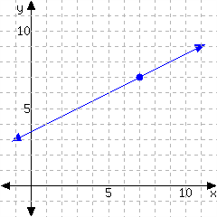
Answer.
\(y = {\frac{1}{2}}\mathopen{}\left(x-7\right)+7\)
Explanation.
The slope is \({{\frac{1}{2}}}\) and the point \((7,7)\) is on the graph of this line, so its equation can be written in point-slope form as \({y = {\frac{1}{2}}\mathopen{}\left(x-7\right)+7}\text{.}\)
40.
Determine the point-slope form of the linear equation from its graph.
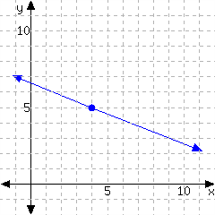
Answer.
\(y = -{\frac{2}{5}}\mathopen{}\left(x-4\right)+5\)
Explanation.
The slope is \({-{\frac{2}{5}}}\) and the point \((4,5)\) is on the graph of this line, so its equation can be written in point-slope form as \({y = -{\frac{2}{5}}\mathopen{}\left(x-4\right)+5}\text{.}\)
41.
Determine the point-slope form of the linear equation from its graph.
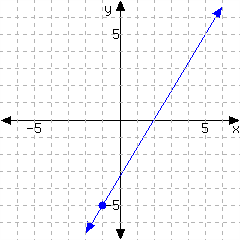
Answer.
\(y = {\frac{5}{3}}\mathopen{}\left(x+1\right)-5\)
Explanation.
The slope is \({{\frac{5}{3}}}\) and the point \((-1,-5)\) is on the graph of this line, so its equation can be written in point-slope form as \({y = {\frac{5}{3}}\mathopen{}\left(x+1\right)-5}\text{.}\)
42.
Determine the point-slope form of the linear equation from its graph.
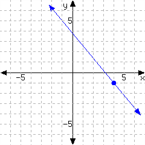
Answer.
\(y = -{\frac{6}{5}}\mathopen{}\left(x-4\right)-1\)
Explanation.
The slope is \({-{\frac{6}{5}}}\) and the point \((4,-1)\) is on the graph of this line, so its equation can be written in point-slope form as \({y = -{\frac{6}{5}}\mathopen{}\left(x-4\right)-1}\text{.}\)
43.
Determine the point-slope form of the linear equation from its graph.
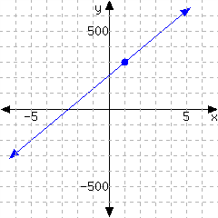
Answer.
\(y = {\frac{250}{3}}\mathopen{}\left(x-1\right)+300\)
Explanation.
The slope is \({{\frac{250}{3}}}\) and the point \((1,300)\) is on the graph of this line, so its equation can be written in point-slope form as \({y = {\frac{250}{3}}\mathopen{}\left(x-1\right)+300}\text{.}\)
44.
Determine the point-slope form of the linear equation from its graph.
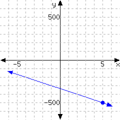
Answer.
\(y = -{\frac{100}{3}}\mathopen{}\left(x-5\right)-500\)
Explanation.
The slope is \({-{\frac{100}{3}}}\) and the point \((5,-500)\) is on the graph of this line, so its equation can be written in point-slope form as \({y = -{\frac{100}{3}}\mathopen{}\left(x-5\right)-500}\text{.}\)
45.
Determine the point-slope form of the linear equation from its graph.
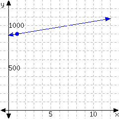
Answer.
\(y = {\frac{50}{3}}\mathopen{}\left(x-1\right)+900\)
Explanation.
The slope is \({{\frac{50}{3}}}\) and the point \((1,900)\) is on the graph of this line, so its equation can be written in point-slope form as \({y = {\frac{50}{3}}\mathopen{}\left(x-1\right)+900}\text{.}\)
46.
Determine the point-slope form of the linear equation from its graph.
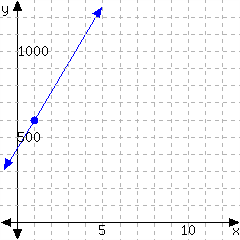
Answer.
\(y = {\frac{500}{3}}\mathopen{}\left(x-1\right)+600\)
Explanation.
The slope is \({{\frac{500}{3}}}\) and the point \((1,600)\) is on the graph of this line, so its equation can be written in point-slope form as \({y = {\frac{500}{3}}\mathopen{}\left(x-1\right)+600}\text{.}\)
47.
Determine the point-slope form of the linear equation from its graph.
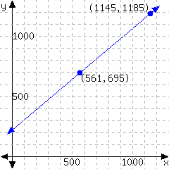
Answer.
\(y = {\frac{245}{292}}\mathopen{}\left(x-561\right)+695\hbox{ or }y = {\frac{245}{292}}\mathopen{}\left(x-1145\right)+1185\)
Explanation.
The slope is \({{\frac{245}{292}}}\) and the point \((561,695)\) is on the graph of this line, so its equation can be written in point-slope form as \({y = {\frac{245}{292}}\mathopen{}\left(x-561\right)+695\hbox{ or }y = {\frac{245}{292}}\mathopen{}\left(x-1145\right)+1185}\text{.}\)
48.
Determine the point-slope form of the linear equation from its graph.
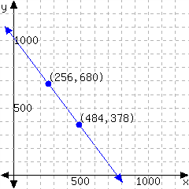
Answer.
\(y = -{\frac{151}{114}}\mathopen{}\left(x-256\right)+680\hbox{ or }y = -{\frac{151}{114}}\mathopen{}\left(x-484\right)+378\)
Explanation.
The slope is \({-{\frac{151}{114}}}\) and the point \((256,680)\) is on the graph of this line, so its equation can be written in point-slope form as \({y = -{\frac{151}{114}}\mathopen{}\left(x-256\right)+680\hbox{ or }y = -{\frac{151}{114}}\mathopen{}\left(x-484\right)+378}\text{.}\)
49.
Determine the point-slope form of the linear equation from its graph.
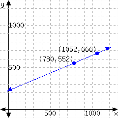
Answer.
\(y = {\frac{57}{136}}\mathopen{}\left(x-1052\right)+666\hbox{ or }y = {\frac{57}{136}}\mathopen{}\left(x-780\right)+552\)
Explanation.
The slope is \({{\frac{57}{136}}}\) and the point \((1052,666)\) is on the graph of this line, so its equation can be written in point-slope form as \({y = {\frac{57}{136}}\mathopen{}\left(x-1052\right)+666\hbox{ or }y = {\frac{57}{136}}\mathopen{}\left(x-780\right)+552}\text{.}\)
50.
Determine the point-slope form of the linear equation from its graph.
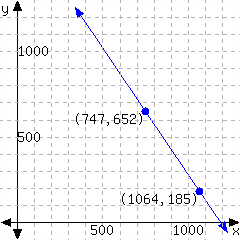
Answer.
\(y = -{\frac{467}{317}}\mathopen{}\left(x-747\right)+652\hbox{ or }y = -{\frac{467}{317}}\mathopen{}\left(x-1064\right)+185\)
Explanation.
The slope is \({-{\frac{467}{317}}}\) and the point \((747,652)\) is on the graph of this line, so its equation can be written in point-slope form as \({y = -{\frac{467}{317}}\mathopen{}\left(x-747\right)+652\hbox{ or }y = -{\frac{467}{317}}\mathopen{}\left(x-1064\right)+185}\text{.}\)
Make Graphs.
Graph the linear equation by identifying the slope and one point on this line.
51.
\(y=-\frac{8}{3}(x-4)-5\)
Answer.

Explanation.
The slope is \(-\frac{8}{3}\) and the point \((4,-5)\) is on the graph of this line.
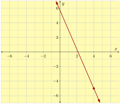
52.
\(y=\frac{5}{7}(x+3)+2\)
Answer.

Explanation.
The slope is \(\frac{5}{7}\) and the point \((-3,2)\) is on the graph of this line.
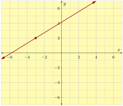
53.
\(y=\frac{3}{4}(x+2)+1\)
Answer.

Explanation.
The slope is \(\frac{3}{4}\) and the point \((-2,1)\) is on the graph of this line.
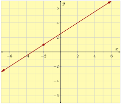
54.
\(y=-\frac{5}{2}(x-1)-5\)
Answer.
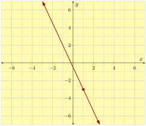
Explanation.
The slope is \(-\frac{5}{2}\) and the point \((1,-3)\) is on the graph of this line.

55.
\(y=-3(x-9)+4\)
Answer.

Explanation.
The slope is \(-3\) and the point \((9,4)\) is on the graph of this line.
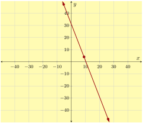
56.
\(y=7(x+3)-10\)
Answer.

Explanation.
The slope is \(7\) and the point \((-3,-10)\) is on the graph of this line.
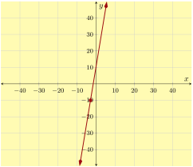
57.
\(y=8(x+12)-20\)
Answer.

Explanation.
The slope is \(8\) and the point \((-12,-20)\) is on the graph of this line.
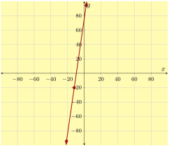
58.
\(y=-5(x-20)-70\)
Answer.

Explanation.
The slope is \(-5\) and the point \((20,-70)\) is on the graph of this line.
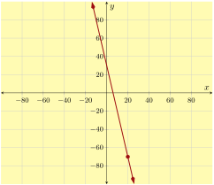
Applications
59.
By your cell phone contract, you pay a monthly fee plus \({\$0.05}\) for each minute you spend on the phone. In one month, you spent \(270\) minutes over the phone, and had a bill totaling \({\$27.50}\text{.}\)
Let \(x\) be the number of minutes you spend on the phone in a month, and let \(y\) be your total cell phone bill for that month, in dollars. Use a linear equation to model your monthly bill based on the number of minutes you spend on the phone.
- A point-slope equation to model this is .
- If you spend \(150\) minutes on the phone in a month, you would be billed .
- If your bill was \({\$38.50}\) one month, you must have spent minutes on the phone in that month.
Answer 1.
\(y = 0.05\mathopen{}\left(x-270\right)+27.5\)
Answer 2.
\(\$21.50\)
Answer 3.
\(490\)
Explanation.
-
A line’s equation in point-slope form looks like \(y=m(x-x_0)+y_0\text{,}\) where \(m\) is the slope, and \((x_0,y_0)\) is some point we know to be on the line. We first need to find the line’s slope. The slope of the linear model has been given to us: \({\$0.05}\) per minute.So now we have that \(y=0.05(x-x_0)+y_0\text{.}\) We can use \((x_0,y_0)=(270,27.5)\) to get \({y = 0.05\mathopen{}\left(x-270\right)+27.5}\text{.}\)
-
In one month, you spent \(150\) minutes on the phone. To find out the bill, we substitute \(150\) in for \(x\) in the equation \(y=0.05(x-270)+27.5\text{,}\) and we have:\(\displaystyle{\begin{aligned} y \amp = 0.05(150-270) +27.5 \\ y \amp = 21.5 \end{aligned} }\)If you spent \(150\) minutes over the phone in a month, your bill for that month would be \({\$21.50}\text{.}\)
-
In one month, you had a cell phone bill of \({\$38.50}\text{.}\) To find how many minutes you spent on the phone that month, we substitute \(38.5\) in for \(y\) in the equation \(y=0.05(x-270)+27.5\text{,}\) and we have:\(\displaystyle{\begin{aligned} y \amp = 0.05(x-270) +27.5 \\ 38.5 \amp = 0.05(x-270) +27.5 \\ 11 \amp = 0.05(x-270)\\ \frac{11}{0.05} \amp = x - 270\\ 220 \amp = x - 270\\ 490 \amp = x\\ 490 \amp = x \end{aligned} }\)If your bill was \({\$38.50}\) in one month, you must have spent \(490\) minutes on the phone.
60.
A company set aside a certain amount of money in the year 2000. The company spent exactly \({\$35{,}000}\) from that fund each year on perks for its employees. In \(2002\text{,}\) there was still \({\$553{,}000}\) left in the fund.
Let \(x\) be the number of years since 2000, and let \(y\) be the amount of money, in dollars, left in the fund that year. Use a linear equation to model the amount of money left in the fund after so many years.
- A point-slope equation to model this is .
- In the year \(2010\text{,}\) there was left in the fund.
- In the year , the fund will be empty.
Answer 1.
\(y = -35000\mathopen{}\left(x-2\right)+553000\)
Answer 2.
\(\$273{,}000\)
Answer 3.
\(2017\)
Explanation.
-
A line’s equation in point-slope form looks like \(y=m(x-x_0)+y_0\text{,}\) where \(m\) is the slope, and \((x_0,y_0)\) is some point we know to be on the line. We first need to find the line’s slope. We have been told that the account decreases by \({\$35{,}000}\) each year, so the slope of the linear model is \(-35000\) (dollars per year).So now we have that \(y=-35000(x-x_0)+y_0\text{.}\) We can use \((x_0,y_0)=(2,553000)\) to get \({y = -35000\mathopen{}\left(x-2\right)+553000}\text{.}\)
-
In the year \(2010\text{,}\) \(x\) was \(10\text{.}\) To find the amount remaining in the fund, we substitute \(10\) in for \(x\) in the equation \(y=-35000(x-2)+553000\text{,}\) and we have:\(\displaystyle{\begin{aligned} y \amp = -35000(10-2) +553000 \\ y \amp = 273000 \end{aligned} }\)So in the year \(2010\text{,}\) the fund had \({\$273{,}000}\) remaining in it.
-
The fund will be empty when it has \({\$0}\) left in it. That is, \(y\) will equal \(0\text{.}\) To find how many years until this happens, we substitute \(0\) in for \(y\) in the equation \(y=-35000(x-2)+553000\text{,}\) and we have:\(\displaystyle{\begin{aligned} y \amp = -35000(x-2) +553000 \\ 0 \amp = -35000(x-2) +553000 \\ -553000 \amp = -35000(x-2)\\ \frac{-553000}{-35000} \amp = x - 2\\ 15.8 \amp = x - 2\\ 17.8 \amp = x\\ 17.80 \amp = x \end{aligned} }\)Approximately \(17.80\) years after 2000, in the year 2017, the fund will be depleted.
61.
A biologist has been observing a tree’s height. This type of tree typically grows by \(0.23\) feet each month. Twelve months into the observation, the tree was \(19.46\) feet tall.
Let \(x\) be the number of months passed since the observations started, and let \(y\) be the tree’s height at that time, in feet. Use a linear equation to model the tree’s height as the number of months pass.
- A point-slope equation to model this is .
- \(27\) months after the observations started, the tree would be feet in height.
- months after the observation started, the tree would be \(30.27\) feet tall.
Answer 1.
\(y = 0.23\mathopen{}\left(x-12\right)+19.46\)
Answer 2.
\(22.91\)
Answer 3.
\(59\)
Explanation.
-
A line’s equation in point-slope form looks like \(y=m(x-x_0)+y_0\text{,}\) where \(m\) is the slope, and \((x_0,y_0)\) is some point we know to be on the line. We first need to find the line’s slope. Since the tree grows at a rate of \(0.23\) feet per month, \(0.23\) is the slope of the linear model.So now we have that \(y=0.23(x-x_0)+y_0\text{.}\) We can use \((x_0,y_0)=(12,19.46)\) to get \({y = 0.23\mathopen{}\left(x-12\right)+19.46}\text{.}\)
-
After \(27\) months, we can find the height of the tree if we substitute \(27\) in for \(x\) in the equation \(y=0.23(x-12)+19.46\text{,}\) and we have:\(\displaystyle{\begin{aligned} y \amp = 0.23(27-12) +19.46 \\ y \amp = 22.91 \end{aligned} }\)So after \(27\) months, the tree is \(\) feet tall.
-
To find when the tree was \(\) feet tall, we substitute \(30.27\) in for \(y\) in the equation \(y=0.23(x-12)+19.46\text{,}\) and we have:\(\displaystyle{\begin{aligned} y \amp = 0.23(x-12) +19.46 \\ 30.27 \amp = 0.23(x-12) +19.46 \\ 10.81 \amp = 0.23(x-12)\\ \frac{10.81}{0.23} \amp = x - 12\\ 47 \amp = x - 12\\ 59 \amp = x\\ 59 \amp = x \end{aligned} }\)So the tree was \(30.27\) feet tall after \(59\) months.
62.
Scientists are conducting an experiment with a gas in a sealed container. The mass of the gas is measured, and the scientists realize that the gas is leaking over time in a linear way. Each minute, they lose \(4.3\) grams. Ten minutes since the experiment started, the remaining gas had a mass of \(163.4\) grams.
Let \(x\) be the number of minutes that have passed since the experiment started, and let \(y\) be the mass of the gas in grams at that moment. Use a linear equation to model the weight of the gas over time.
- A point-slope equation to model this is .
- \(34\) minutes after the experiment started, there would be grams of gas left.
- If a linear model continues to be accurate, minutes since the experiment started, all gas in the container will be gone.
Answer 1.
\(y = -4.3\mathopen{}\left(x-10\right)+163.4\)
Answer 2.
\(60.2\)
Answer 3.
\(48\)
Explanation.
-
A line’s equation in point-slope form looks like \(y=m(x-x_0)+y_0\text{,}\) where \(m\) is the slope, and \((x_0,y_0)\) is some point we know to be on the line. We first need to find the line’s slope. Since the gas is leaking at a rate of \(4.3\) grams per minute, we know that the slope of the linear model is \(-4.3\text{.}\)So now we have that \(y=-4.3(x-x_0)+y_0\text{.}\) We can use \((x_0,y_0)=(10,163.4)\) to get \({y = -4.3\mathopen{}\left(x-10\right)+163.4}\text{.}\)
-
After \(34\) minutes, we can find the mass of the remaining gas if we substitute \(34\) in for \(x\) in the equation \(y=-4.3(x-10)+163.4\text{,}\) and we have:\(\displaystyle{\begin{aligned} y \amp = -4.3(34-10) +163.4 \\ y \amp = 60.2 \end{aligned} }\)So after \(34\) minutes, there are \(60.2\) grams of gas remaining.
-
To find when the gas will be all gone, we need to find when there are \(0\) grams of gas left. We can substitute \(0\) in for \(y\) in the equation \(y=-4.3(x-10)+163.4\text{,}\) and we have:\(\displaystyle{\begin{aligned} y \amp = -4.3(x-10) +163.4 \\ 0 \amp = -4.3(x-10) +163.4 \\ -163.4 \amp = -4.3(x-10)\\ \frac{-163.4}{-4.3} \amp = x - 10\\ 38 \amp = x - 10\\ 48 \amp = x\\ 48 \amp = x \end{aligned} }\)So after \(48\) minutes, the gas will be all gone.
63.
A company set aside a certain amount of money in the year 2000. The company spent exactly the same amount from that fund each year on perks for its employees. In \(2002\text{,}\) there was still \({\$514{,}000}\) left in the fund. In \(2005\text{,}\) there was \({\$376{,}000}\) left.
Let \(x\) be the number of years since 2000, and let \(y\) be the amount of money, in dollars, left in the fund that year. Use a linear equation to model the amount of money left in the fund after so many years.
- A point-slope equation to model this is .
- In the year \(2010\text{,}\) there was left in the fund.
- In the year , the fund will be empty.
Answer 1.
\(y = -46000\mathopen{}\left(x-2\right)+514000\hbox{ or }y = -46000\mathopen{}\left(x-5\right)+376000\)
Answer 2.
\(\$146{,}000\)
Answer 3.
\(2013\)
Explanation.
-
A line’s equation in point-slope form looks like \(y=m(x-x_0)+y_0\text{,}\) where \(m\) is the slope, and \((x_0,y_0)\) is some point we know to be on the line. We first need to find the line’s slope. To find the slope, we need two points on the line. We have been given that \((2,514000)\) and \((5,376000)\) are points on the linear model, so we can use the slope formula:\(\displaystyle{ \text{slope}=\frac{y_{2}-y_{1}}{x_{2}-x_{1}} }\)First, we mark which number corresponds to which variable in the formula:\(\displaystyle{ (2,514000) \longrightarrow (x_{1},y_{1}) }\)\(\displaystyle{ (5,376000) \longrightarrow (x_{2},y_{2}) }\)Now we substitute these numbers into the corresponding variables in the slope formula:\(\displaystyle{ \begin{aligned}\text{slope}\amp =\frac{y_{2}-y_{1}}{x_{2}-x_{1}}\\\amp =\frac{376000-514000}{5-2}\\\amp =\frac{-138000}{3}\\\amp =-46000 \end{aligned}}\)This line’s slope is \(-46000\text{.}\) This implies that the company is spending \({\$46{,}000}\) per year on perks for its employees.So now we have that \(y=-46000(x-x_0)+y_0\text{.}\) We can either use \((x_0,y_0)=(2,514000)\) or \((x_0,y_0)=(5,376000)\) to get \({y = -46000\mathopen{}\left(x-2\right)+514000\hbox{ or }y = -46000\mathopen{}\left(x-5\right)+376000}\text{.}\)
-
In the year \(2010\text{,}\) \(x\) was \(10\text{.}\) To find the amount remaining in the fund, we substitute \(10\) in for \(x\) in the equation \(y=-46000(x-2)+514000\text{,}\) and we have:\(\displaystyle{\begin{aligned} y \amp = -46000(10-2) +514000 \\ y \amp = 146000 \end{aligned} }\)So in the year \(2010\text{,}\) the fund had \({\$146{,}000}\) remaining in it.
-
The fund will be empty when it has \({\$0}\) left in it. That is, \(y\) will equal \(0\text{.}\) To find how many years until this happens, we substitute \(0\) in for \(y\) in the equation \(y=-46000(x-2)+514000\text{,}\) and we have:\(\displaystyle{\begin{aligned} y \amp = -46000(x-2) +514000 \\ 0 \amp = -46000(x-2) +514000 \\ -514000 \amp = -46000(x-2)\\ \frac{-514000}{-46000} \amp = x - 2\\ 11.1739130434783 \amp = x - 2\\ 13.1739130434783 \amp = x\\ 13.17 \amp = x \end{aligned} }\)Approximately \(13.17\) years after 2000, in the year 2013, the fund will be depleted.
64.
By your cell phone contract, you pay a monthly fee plus some money for each minute you use the phone during the month. In one month, you spent \(280\) minutes on the phone, and paid \({\$35.20}\text{.}\) In another month, you spent \(400\) minutes on the phone, and paid \({\$43.00}\text{.}\)
Let \(x\) be the number of minutes you talk over the phone in a month, and let \(y\) be your cell phone bill, in dollars, for that month. Use a linear equation to model your monthly bill based on the number of minutes you talk over the phone.
- A point-slope equation to model this is .
- If you spent \(150\) minutes over the phone in a month, you would pay .
- If in a month, you paid \({\$45.60}\) of cell phone bill, you must have spent minutes on the phone in that month.
Answer 1.
\(y = 0.065\mathopen{}\left(x-280\right)+35.2\hbox{ or }y = 0.065\mathopen{}\left(x-400\right)+43\)
Answer 2.
\(\$26.75\)
Answer 3.
\(440\)
Explanation.
-
A line’s equation in point-slope form looks like \(y=m(x-x_0)+y_0\text{,}\) where \(m\) is the slope, and \((x_0,y_0)\) is some point we know to be on the line. We first need to find the line’s slope. To find the slope, we need two points on the line. We have been given that \((280,35.2)\) and \((400,43)\) are points on the linear model, so we can use the slope formula:\(\displaystyle{ \text{slope}=\frac{y_{2}-y_{1}}{x_{2}-x_{1}} }\)First, we mark which number corresponds to which variable in the formula:\(\displaystyle{ (280,35.2) \longrightarrow (x_{1},y_{1}) }\)\(\displaystyle{ (400,43) \longrightarrow (x_{2},y_{2}) }\)Now we substitute these numbers into the corresponding variables in the slope formula:\(\displaystyle{ \begin{aligned}\text{slope}\amp =\frac{y_{2}-y_{1}}{x_{2}-x_{1}}\\\amp =\frac{43-35.2}{400-280}\\\amp =\frac{7.8}{120}\\\amp =0.065 \end{aligned}}\)This line’s slope is \(0.065\text{.}\) This implies you have to pay \({\$0.07}\) per minute that you use the phone.So now we have that \(y=0.065(x-x_0)+y_0\text{.}\) We can either use \((x_0,y_0)=(280,35.2)\) or \((x_0,y_0)=(400,43)\) to get \({y = 0.065\mathopen{}\left(x-280\right)+35.2\hbox{ or }y = 0.065\mathopen{}\left(x-400\right)+43}\text{.}\)
-
In one month, you spent \(150\) minutes on the phone. To find out the bill, we substitute \(150\) in for \(x\) in the equation \(y=0.065(x-280)+35.2\text{,}\) and we have:\(\displaystyle{\begin{aligned} y \amp = 0.065(150-280) +35.2 \\ y \amp = 26.75 \end{aligned} }\)If you spent \(150\) minutes over the phone in a month, your bill for that month would be \({\$26.75}\text{.}\)
-
In one month, you had a cell phone bill of \({\$45.60}\text{.}\) To find how many minutes you spent on the phone that month, we substitute \(45.6\) in for \(y\) in the equation \(y=0.065(x-280)+35.2\text{,}\) and we have:\(\displaystyle{\begin{aligned} y \amp = 0.065(x-280) +35.2 \\ 45.6 \amp = 0.065(x-280) +35.2 \\ 10.4 \amp = 0.065(x-280)\\ \frac{10.4}{0.065} \amp = x - 280\\ 160 \amp = x - 280\\ 440 \amp = x\\ 440 \amp = x \end{aligned} }\)If your bill was \({\$45.60}\) in one month, you must have spent \(440\) minutes on the phone.
65.
Scientists are conducting an experiment with a gas in a sealed container. The mass of the gas is measured, and the scientists realize that the gas is leaking over time in a linear way.
Five minutes since the experiment started, the gas had a mass of \(136.5\) grams.
Sixteen minutes since the experiment started, the gas had a mass of \(93.6\) grams.
Let \(x\) be the number of minutes that have passed since the experiment started, and let \(y\) be the mass of the gas in grams at that moment. Use a linear equation to model the weight of the gas over time.
- A point-slope equation to model this is .
- \(34\) minutes after the experiment started, there would be grams of gas left.
- If a linear model continues to be accurate, minutes since the experiment started, all gas in the container will be gone.
Answer 1.
\(y = -3.9\mathopen{}\left(x-5\right)+136.5\hbox{ or }y = -3.9\mathopen{}\left(x-16\right)+93.6\)
Answer 2.
\(23.4\)
Answer 3.
\(40\)
Explanation.
-
A line’s equation in point-slope form looks like \(y=m(x-x_0)+y_0\text{,}\) where \(m\) is the slope, and \((x_0,y_0)\) is some point we know to be on the line. We first need to find the line’s slope. To find the slope, we need two points on the line. We have been given that \((5,136.5)\) and \((16,93.6)\) are points on the linear model, so we can use the slope formula:\(\displaystyle{ \text{slope}=\frac{y_{2}-y_{1}}{x_{2}-x_{1}} }\)First, we mark which number corresponds to which variable in the formula:\(\displaystyle{ (5,136.5) \longrightarrow (x_{1},y_{1}) }\)\(\displaystyle{ (16,93.6) \longrightarrow (x_{2},y_{2}) }\)Now we substitute these numbers into the corresponding variables in the slope formula:\(\displaystyle{ \begin{aligned}\text{slope}\amp =\frac{y_{2}-y_{1}}{x_{2}-x_{1}}\\\amp =\frac{93.6-136.5}{16-5}\\\amp =\frac{-42.9}{11}\\\amp =-3.9 \end{aligned}}\)This line’s slope is \(-3.9\text{.}\) This implies that the gas is leaking with a rate of \(3.9\) grams per minute.So now we have that \(y=-3.9(x-x_0)+y_0\text{.}\) We can either use \((x_0,y_0)=(5,136.5)\) or \((x_0,y_0)=(16,93.6)\) to get \({y = -3.9\mathopen{}\left(x-5\right)+136.5\hbox{ or }y = -3.9\mathopen{}\left(x-16\right)+93.6}\text{.}\)
-
After \(34\) minutes, we can find the mass of the remaining gas if we substitute \(34\) in for \(x\) in the equation \(y=-3.9(x-5)+136.5\text{,}\) and we have:\(\displaystyle{\begin{aligned} y \amp = -3.9(34-5) +136.5 \\ y \amp = 23.4 \end{aligned} }\)So after \(34\) minutes, there are \(23.4\) grams of gas remaining.
-
To find when the gas will be all gone, we need to find when there are \(0\) grams of gas left. We can substitute \(0\) in for \(y\) in the equation \(y=-3.9(x-5)+136.5\text{,}\) and we have:\(\displaystyle{\begin{aligned} y \amp = -3.9(x-5) +136.5 \\ 0 \amp = -3.9(x-5) +136.5 \\ -136.5 \amp = -3.9(x-5)\\ \frac{-136.5}{-3.9} \amp = x - 5\\ 35 \amp = x - 5\\ 40 \amp = x\\ 40 \amp = x \end{aligned} }\)So after \(40\) minutes, the gas will be all gone.
66.
A biologist has been observing a tree’s height. \(13\) months into the observation, the tree was \(20.49\) feet tall. \(17\) months into the observation, the tree was \(21.01\) feet tall.
Let \(x\) be the number of months passed since the observations started, and let \(y\) be the tree’s height at that time, in feet. Use a linear equation to model the tree’s height as the number of months pass.
- A point-slope equation to model this is .
- \(27\) months after the observations started, the tree would be feet in height.
- months after the observation started, the tree would be \(25.69\) feet tall.
Answer 1.
\(y = 0.13\mathopen{}\left(x-13\right)+20.49\hbox{ or }y = 0.13\mathopen{}\left(x-17\right)+21.01\)
Answer 2.
\(22.31\)
Answer 3.
\(53\)
Explanation.
-
A line’s equation in point-slope form looks like \(y=m(x-x_0)+y_0\text{,}\) where \(m\) is the slope, and \((x_0,y_0)\) is some point we know to be on the line. We first need to find the line’s slope. To find the slope, we need two points on the line. We have been given that \((13,20.49)\) and \((17,21.01)\) are points on the linear model, so we can use the slope formula:\(\displaystyle{ \text{slope}=\frac{y_{2}-y_{1}}{x_{2}-x_{1}} }\)First, we mark which number corresponds to which variable in the formula:\(\displaystyle{ (13,20.49) \longrightarrow (x_{1},y_{1}) }\)\(\displaystyle{ (17,21.01) \longrightarrow (x_{2},y_{2}) }\)Now we substitute these numbers into the corresponding variables in the slope formula:\(\displaystyle{ \begin{aligned}\text{slope}\amp =\frac{y_{2}-y_{1}}{x_{2}-x_{1}}\\\amp =\frac{21.01-20.49}{17-13}\\\amp =\frac{0.52}{4}\\\amp =0.13 \end{aligned}}\)This line’s slope is \(0.13\text{.}\) This implies that the tree is growing by \(0.13\) feet each month.So now we have that \(y=0.13(x-x_0)+y_0\text{.}\) We can either use \((x_0,y_0)=(13,20.49)\) or \((x_0,y_0)=(17,21.01)\) to get \({y = 0.13\mathopen{}\left(x-13\right)+20.49\hbox{ or }y = 0.13\mathopen{}\left(x-17\right)+21.01}\text{.}\)
-
After \(27\) months, we can find the height of the tree if we substitute \(27\) in for \(x\) in the equation \(y=0.13(x-13)+20.49\text{,}\) and we have:\(\displaystyle{\begin{aligned} y \amp = 0.13(27-13) +20.49 \\ y \amp = 22.31 \end{aligned} }\)So after \(27\) months, the tree is \(22.31\) feet tall.
-
To find when the tree was \(25.69\) feet tall, we substitute \(25.69\) in for \(y\) in the equation \(y=0.13(x-13)+20.49\text{,}\) and we have:\(\displaystyle{\begin{aligned} y \amp = 0.13(x-13) +20.49 \\ 25.69 \amp = 0.13(x-13) +20.49 \\ 5.2 \amp = 0.13(x-13)\\ \frac{5.2}{0.13} \amp = x - 13\\ 40 \amp = x - 13\\ 53 \amp = x\\ 53 \amp = x \end{aligned} }\)So the tree was \(25.69\) feet tall after \(53\) months.